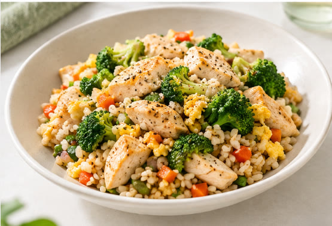
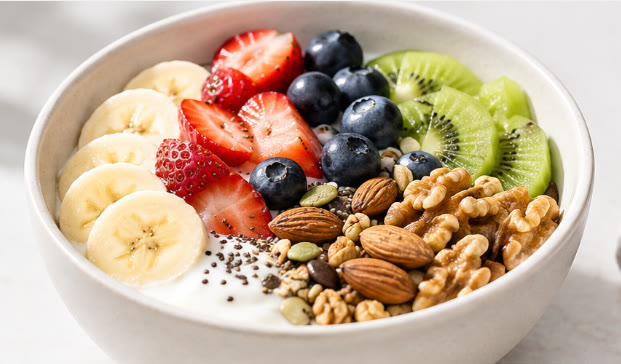

FOOD, IN ITS BEST FORM
잘 먹는 하루를
나답게 설계하다
복잡한 기준보다 좋은 재료로
여덟 가지 질문에 맞춘 당신만의 특별한 식단을 제안합니다.
가입 없음. 입력한 값은 이 페이지 안에서만 계산합니다.


OUR RULES
덜어내고, 제대로 채우기
재료에 가까운 식사
신선한 채소와 과일, 통곡물, 자연 유래 단백질을 중심으로 골라요.
가공은 최대한 덜하게
인공 첨가물, 방부제, 과도한 나트륨과 정제된 설탕을 줄여요.
영양소를 골고루
탄수화물·단백질·지방을 무조건 제한하지 않고 적절히 먹어요.
무리하지 않고 꾸준히
무언가를 끊기보다, 일상에서 조금 더 나은 쪽을 골라요.
FRESH & COLORFUL
채소와 과일
시금치, 브로콜리, 베리류
신선하거나 첨가물 없는 냉동 제품WHOLE GRAINS
통곡물
퀴노아, 오트밀, 통밀빵
가능하면 덜 정제된 곡물로NATURAL PROTEIN
건강한 단백질
닭가슴살, 연어, 달걀
자연 그대로의 재료를 골라요GOOD FATS
건강한 지방
아보카도, 올리브 오일, 아몬드
식사에 적당히 더해 보세요EAT WELL, YOUR WAY
건강한 식단도 내 취향대로
BEFORE YOU START
쓰기 전에 확인해 주세요
이 도구 대신 의사나 영양사와 상담해 주세요만 18세 미만, 임신·수유 중이거나 식이 제한이 필요한 질환 또는 섭식장애 병력이 있는 경우
입력한 정보는 저장되나요?
이 페이지 안에서만 계산하고 서버로 보내지 않습니다. 새로고침하면 사라집니다. 방문 수 같은 익명 통계만 쿠키 없이 집계합니다.
목표 열량은 어떻게 계산하나요?
Mifflin-St Jeor 공식으로 기초대사량을 구하고 활동량과 목표를 반영합니다. 단백질은 몸무게 1kg당 목표별 기준으로 계산하되, BMI 25를 넘는 몸무게는 넘는 부분의 25%만 반영해 과하게 잡히지 않게 했습니다.
영양 수치는 어디서 가져오나요?
식품의약품안전처 식품영양성분 데이터베이스(공공데이터포털)의 원재료성·가공식품 값을 씁니다. 국내 DB에 없는 일부 재료(템페, 타히니, 블랙빈 등)는 미국 농무부(USDA) 값을 씁니다. 가격은 2026년 10월 기준 전국 평균 소매가(KAMIS·한국소비자원 참가격)를 쓰고, 값을 구하지 못한 재료는 추정치예요. 살 때는 매장과 포장 단위에 따라 달라요.
외식이나 구내식당 위주여도 쓸 수 있나요?
이 도구는 직접 챙겨 먹으려는 사람을 위한 하루 세 끼 기준입니다. 구내식당·외식·급식 위주이거나 하루 세 끼가 아니라면 결과가 맞지 않을 수 있어요.
의학적 조언인가요?
아닙니다. 일반적인 식사 구성 예시이며 진단이나 치료를 대신하지 않습니다.
이렇게 먹으면 어떤 점이 좋나요?
- 채소·과일·통곡물이 늘면서 식이섬유와 비타민을 더 챙길 수 있어요.
- 포만감이 오래가는 음식이라 과식이 줄어 식습관 개선과 체중 관리에 도움이 될 수 있어요.
- 가공식품이 줄면 첨가당과 나트륨도 함께 줄어요. 국물·장류 간은 싱겁게.